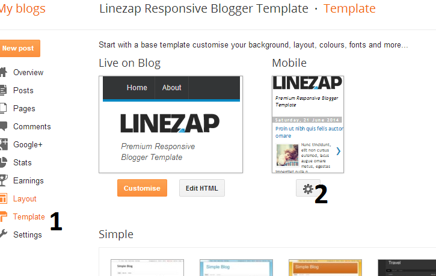
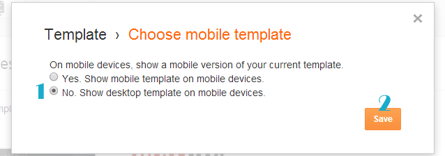
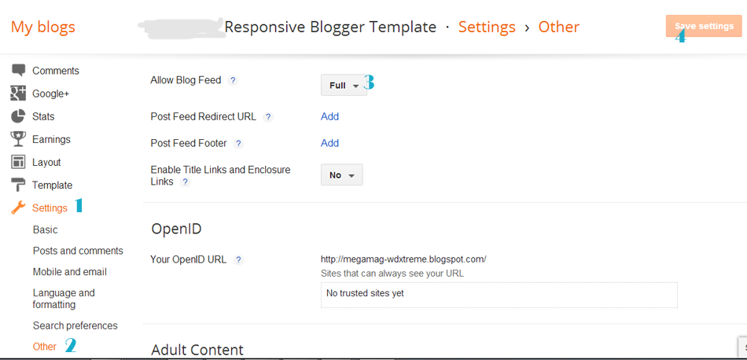

“Glam up Blogger Template” Documentation by “Soratemplates” v1.0

Created: 17/11/2015
By: Soratemplate
soratemplate@gmail.com
Thank you for purchasing my theme. If you have any questions that are beyond the scope of this help file, please feel free to email via my user page contact form. Thanks so much!
Table of Contents
- Installation
- Upload Logo
- Setting up the menu
- Enable Mobile Template
- How to setup slider
- Enable Full Feed
- Enable Search Preference
- Author Description
- Installation - top
- Upload Logo- top
- Setting up the menu - top
- On Blogger Dashbord Click Template
- Click Edit HTML
- (Top Menu) Scroll down and Find this Code :
<div id='navigation-wrapper'> <ul class='menu1'> <li><a href=''>Home</a></li> <li><a href=''>Beauty</a> <ul class='sub-menu'> <li><a href=''>Category</a></li> <li><a href=''>Category</a></li> <li><a href=''>Category</a></li> </ul> </li> <li><a href=''>CELEBRITY</a> <ul class='sub-menu'> <li><a href=''>Category</a></li> <li><a href=''>Category</a></li> <li><a href=''>Category</a></li> </ul> </li> <li><a href=''>ENTERTAINMENT</a></li> <li><a href=''>Glam up</a></li> <li><a href=''>Food</a></li> </ul> </div>
- Change # with yours URL link
- Enable Mobile Template - top
- Enable Full Feed - top Access Settings menu and choose Other settings. Click drop-down list at Allow Blog Feed option, then choose Full. After that, click Save settings button at the top right corner.
- Enable Search Preference - top To improve your blog SEO, please enable Blogger Search Preferences. Access your Settings menu, choose Search preferences tab and click Edit link on Meta tags section
- Author Description - top
Now you have Glam up Blogger Template. You Can Follow This Steps To Upload Your Blogger Template To Blogger Platform. First Login to your Blogger DashBoard by Using Your Google Username And Password from Here.
Then follow these steps:
1. On Blogger Dashboard Click Template.
2. Click Backup/Restore button (Top Right).
3. Click Choose ( Browse..) File button. Find where the “Fashion-Blogger-Template.xml” file location.
4. Then Click Upload.
Note: Before Uploading This Template Mobile Blogger Template Must Enable to make Blogger Customize Work
Access your blog Layout > click Edit link on Header widget
To Edit Menu in this theme you can follow this step:
After you apply mobile version for this template, Advance Editor will be disabled. This is official bug of Blogger. So, please make sure, you used Advance Editor to change all settings you want before do this step.
As default, Blogger will use its own template for you blog on mobile. So if you want to use Glam up template on mobile devices, please enable it first.Access your Template menu and click on Gear button of Mobile template.
 In Choose mobile template window, check "No. Show desktop template on mobile devices." option, then click Save button.



Next, check Yes option, then type your Blog Description into the text field and click Save changes.

Add author info on sidebar (About me)
You Can See that sidebar area have About me section. To Edit About me in this theme you can follow this step:
1. Go to -> Blogger Dashboard- >layout -> About me- > press edit button.
2. Open folder plugin, copy and paste content of file aboutme.txt to widget content, replace the image link to your image and description.
Author info on post page
Author image and name automatically fetch from Google account.
How to edit description and social icons of author , you can follow this step:1. On Blogger Dashbord Click Template
2. Click Edit HTML
3. Scroll down and Find this Code :
<!--author biography start-->
<div class='post-author'>
<div class='author-img'>
<!-- avatar of author here-->
<div class='avatar avatar-100 photo'><script src='/feeds/posts/default?alt=json-in-script&callback=authorshow'/></div>
</div>
<div class='author-content'>
<h5><a href='' rel='author' title='Posts by solopine'><data:post.author/></a></h5>
<p>Author description goes here</p>
</div>
</div>
<!--author biography end -->
4. Change Links with yours Social URL link
Once again, thank you so much for purchasing this theme. As I said at the beginning, I'd be glad to help you if you have any questions relating to this theme. No guarantees, but I'll do my best to assist.